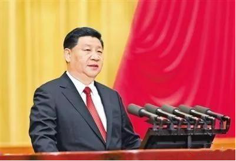
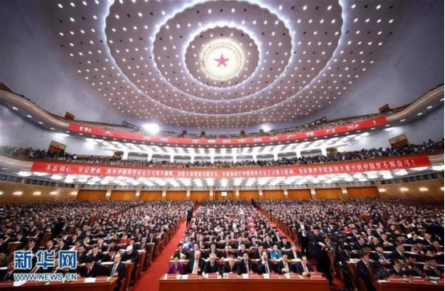
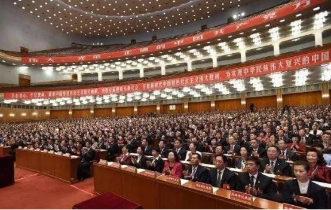

热烈庆祝十九大胜利召开 中国农业即将进入新篇章
2017-10-20
喜迎十九大
10月18日，中国共产党第十九次全国代表大会在北京人民大会堂开幕。习近平总书记指出，本次大会的主题是：不忘初心，牢记使命，高举中国特色社会主义伟大旗帜，决胜全面建成小康社会，夺取新时代中国特色社会主义伟大胜利，为实现中华民族伟大复兴的中国梦不懈奋斗。

习近平代表第十八届中央委员会向大会作了题为《决胜全面建成小康社会夺取新时代中国特色社会主义伟大胜利》的报告。报告分13个部分：一、过去五年的工作和历史性变革；二、新时代中国共产党的历史使命；三、新时代中国特色社会主义思想和基本方略；四、决胜全面建成小康社会，开启全面建设社会主义现代化国家新征程；五、贯彻新发展理念，建设现代化经济体系；六、健全人民当家作主制度体系，发展社会主义民主政治；七、坚定文化自信，推动社会主义文化繁荣兴盛；八、提高保障和改善民生水平，加强和创新社会治理；九、加快生态文明体制改革，建设美丽中国；十、坚持走中国特色强军之路，全面推进国防和军队现代化；十一、坚持“一国两制”，推进祖国统一；十二、坚持和平发展道路，推动构建人类命运共同体；十三、坚定不移全面从严治党，不断提高党的执政能力和领导水平。

报告中，习近平总书记指出：农业农村农民问题是关系国计民生的根本性问题，必须始终把解决好“三农”问题作为全党工作重中之重。要坚持农业农村优先发展，加快推进农业农村现代化。巩固和完善农村基本经营制度，深化农村土地制度改革，完善承包地“三权”分置制度。保持土地承包关系稳定并长久不变，第二轮土地承包到期后再延长三十年。构建现代农业产业体系、生产体系、经营体系，完善农业支持保护制度，发展多种形式适度规模经营，培育新型农业经营主体，健全农业社会化服务体系，实现小农户和现代农业发展有机衔接。促进农村一二三产业融合发展，支持和鼓励农民就业创业，拓宽增收渠道。培养造就一支懂农业、爱农村、爱农民的“三农”工作队伍。

本次会议，习近平总书记在报告中多次强调三农问题，提出了一系列新理念、新思想、新战略。农批市场作为农业流通的一个重要环节，未来国家必将会加大对新型农业社会化服务的扶持力度和措施。
保定联农全体员工在党的正确道路引领之下，将不忘初心，牢记使命，高举中国特色社会主义伟大旗帜，紧紧围绕在党中央周围，坚持走社会主义路线，开创农产品行业的新时代，完善农业供给侧改革，为中国农产品行业的发展贡献新力量。